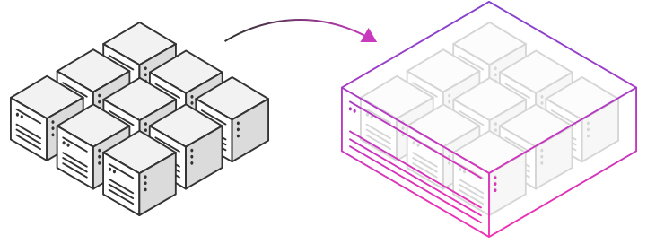
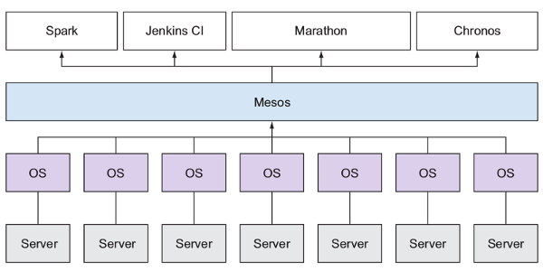

Cloud 'wise': prevent expensive bills and vendor lock-in by using Apache mesos
Moving to the cloud
A lot of benefits:
- Flexibility: scaling up and down
- Automatic software updates
- Competitiveness: state of the art technology at your fingertips
- ...
But in practice... (1)

Our relationship with our favourite cloud provider...
The resources we pay for are underutilized
But in practice... (2)
When using the higher level services offered by a cloud provider (e.g. AWS: Redshift, Kinesis, etc.) there's the risk of vendor lock-in
The need for an abstraction layer

To tackle the above risks, we need to introduce an extra abstraction layer
One framework suitable for this is Apache Mesos
Apache Mesos: 10k feet

- Efficient resource sharing and isolation across multiple distributed applications
- Mesos: kernel of distributed OS
- Ideally: one Mesos cluster for the whole data center
Efficient sharing of resources
How?
- Mesos master determines which resources are available
- It makes offers back to specific application schedulers (e.g. Spark): can accept or reject offers
=> Non-monolithic scheduling: 2-level scheduling were scheduling algorithms are pluggable
Isolation

Isolation is achieved by using containers, a lightweight alternative to virtual machines
- Docker
- Mesos: using cgroups
Mesos ecosystem
- Marathon: orchestrator for applications and services: init system of an OS (systemd,upstart). Alternatives are Kubernetes and Docker Swarm
- Chronos: job scheduler for Mesos: cron
- DC/OS: Data Center Operation System. Both enterprise and open source editions available. It's adding these features to Mesos:
- Open Source: service discovery, package management, configuration management (UI + CLI)
- Enterprise: security, monitoring, multi-tenant features
Installing DC/OS
- Local: Vagrant Installer
- Cloud: Scripts/templates available to install DC/OS on major cloud providers:
- AWS: CloudFormation templates
- Microsoft Azure: templates or Marketplace
- DigitalOcean
- Google Compute Engine (GCE)
Mesos use cases
- Big Data processing: e.g. the SMACK stack
- Spark: big data processing engine
- Mesos: resource management
- Akka: framework for building concurrent and distributed applications
- Cassandra: NoSQL database
- Kafka: distributed messaging system
- Other use cases: link
Notable Mesos users
DC/OS Community
Notable contributors:
Autodesk, Canonical, Cisco, Citrix, EMC, HPE, Joyent, Microsoft, NetApp, Verizon, ...
Demo
Calculating Π using the Monte Carlo method in Apache Spark on DC/OS